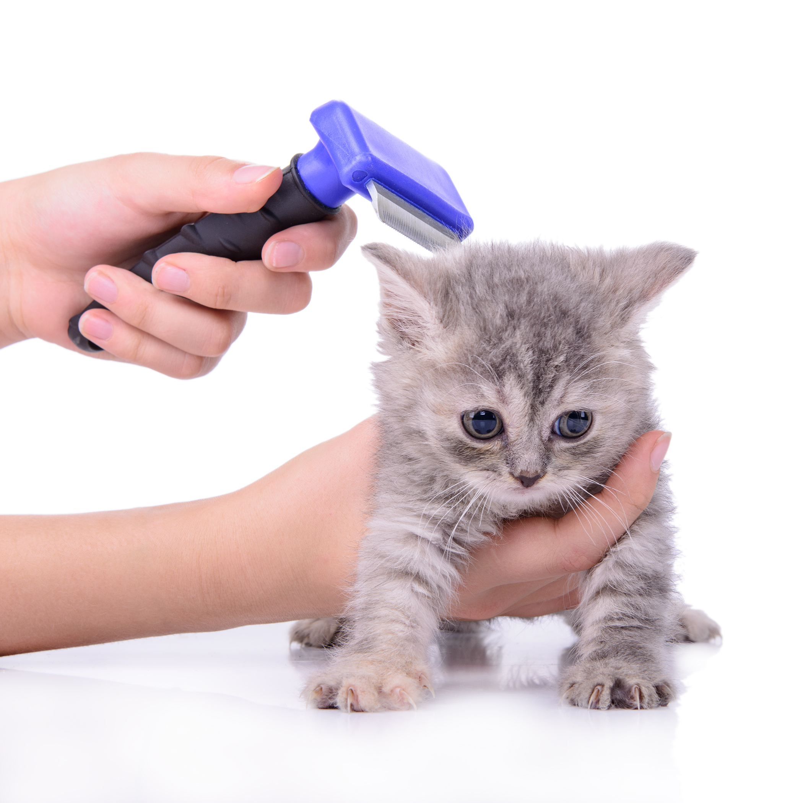

Higiene
Cepillado diario en gatos: Adiós a las bolas de pelo

El cepillado no es solo una cuestión estética; es una necesidad de salud digestiva para tu gato. Al acicalarse, los gatos ingieren gran cantidad de pelo muerto. Si no lo removemos nosotros, ese pelo termina en su estómago.
1. Prevención de tricobezoares (bolas de pelo)
Las bolas de pelo pueden causar vómitos frecuentes, estreñimiento y, en casos graves, obstrucciones intestinales que requieren cirugía.
Cepillar a tu gato diariamente (o al menos 3 veces por semana) reduce drásticamente la cantidad de pelo suelto que ingiere, previniendo estos problemas y manteniendo la casa más limpia.
2. Detección temprana de problemas
El momento del cepillado es ideal para inspeccionar a tu gato. Al pasar el cepillo, puedes notar bultos, heridas, zonas calientes o la presencia de parásitos como pulgas o sus heces (puntos negros).
3. Eligiendo la herramienta correcta
- Pelo corto: Guantes de goma o cepillos de cerdas suaves son excelentes para remover pelo muerto y masajear la piel.
- Pelo largo: Necesitas peines metálicos o cepillos tipo carda para llegar a la base del pelo y deshacer nudos antes de que se conviertan en "rastas" dolorosas que tiran de la piel.